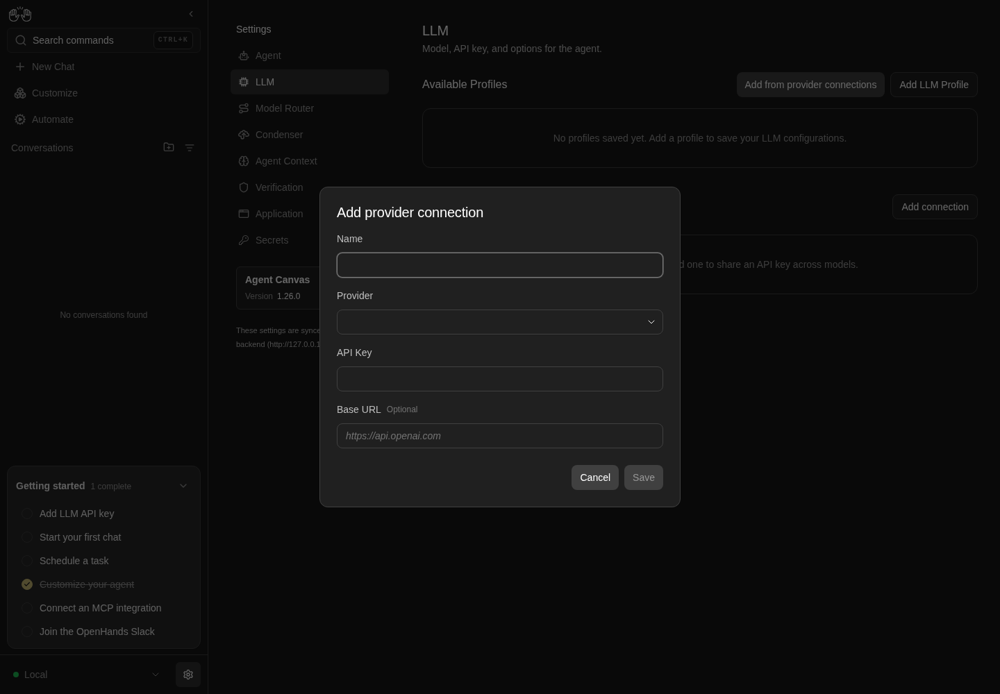

How to get to it
- Sidebar settings gear (
backend-selector-settings-link), then LLM in the settings navigation (sidebar-settings-/settings/llm); the section sits below Available Profiles. - Direct URL
/settings/llm. - Command menu (
Control+k/Meta+k, orcommand-menu-trigger): searchLLM, choose LLM profiles. Searchingprovider connectionfinds nothing. - Add connection (
add-provider-connection) opens the create modal; each row's...(provider-connection-menu-trigger) opens Bulk add / Edit / Delete. - Elsewhere (other families): Model Router's editor has its own Add connection (
meta-profile-add-provider-connection, see F12); the LLM profile editor links a profile to a connection and Add from provider connections bulk-adds without a preselected connection (see F10).
Before you start
Start with the common launch and health checks, then follow this family’s preconditions in order. Recipes share the fixtures and state named below.
Preconditions:
- A fresh
control-openhands launch --new, doctored,onboard --skipdone, desktop viewport. Do not runllm preset deepseekbefore this family: the recipes need no LLM profile and no connection (control-openhands api GET /api/profileslists none,control-openhands api GET /api/llm/provider-connectionsis[]), so the profile added in Bulk add becomes the active one. - A DeepSeek key in a file (
<key file>). Pass it only withbrowser fill ... --value-file <key file>; never on the command line. F11.agent-uses-connectionandF11.rotatestart three tiny conversations ondeepseek/deepseek-flash.F11.load-erroris arranged by making the run's own connections store unreadable (a shell arrange step that writes only$OH_VERIFY_RUN/private/provider-connections/provider_connections.json, restored afterwards);service stop agent-serverdoes not work because it replaces the whole page withagent-server-onboarding-screen.- Blocked here:
F11.cloud(needs a Cloud account with and without an organization, as owner and as member).
Behavior inventory
21 stable behavior IDs and their expected behavior
F11.list-emptywith no connections the section shows the headingProvider connections, the sublineShare one API key across multiple models., Add connection andNo provider connections yet. Add one to share an API key across models.Read recipe ↓F11.listeach row shows the name, the provider,<n> model(s)(profiles linked to it), a green key-set icon and a...menu labelledProvider connection menu; the section is reachable from the settings nav, the command menu and the URL. Read recipe ↓F11.create-validationin Add provider connection focus starts on Name; Save stays disabled until Name, a picked Provider and API Key are non-blank (whitespace does not count); a provider typed but not picked is cleared; Enter does not submit. Read recipe ↓F11.provider-pickerthe Provider combobox listsVerified Models(OpenHands, Anthropic, OpenAI, …, deepseek, …) andOther Modelsgroups and filters as you type. Read recipe ↓F11.createSave creates the connection (toastConnection "<name>" created); the row persists after a reload and a backend restart; the key is stored but never shown. Read recipe ↓F11.create-cancelCancel, Escape and a backdrop click close the modal without creating anything; reopening starts empty. Read recipe ↓F11.create-errora server rejection (for example a name over 128 characters) keeps the modal open and toasts a readable message. Read recipe ↓F11.editEdit opensEdit provider connectionprefilled (key blank with placeholder<hidden>and hintLeave blank to keep the current key.); rename, provider and base URL changes persist (toastConnection "<name>" updated), a cleared base URL is stored as none, a blank name disables Save, and a rename shows in the linked profiles' group header. Read recipe ↓F11.add-modelsBulk add opensAdd models as profileswith the row's provider and connection preselected; the profiles it adds are linked and the row's count goes up. Read recipe ↓F11.agent-uses-connectiona conversation on a profile linked to the connection runs with the connection's key; an Edit with the key left blank keeps it working. Read recipe ↓F11.rotatetyping a new key rotates it for new conversations: an invalid key makes the next conversation fail with the provider's authentication error and no reply; rotating back restores replies. Read recipe ↓F11.deleteDelete asksAre you sure you want to delete the connection "<name>"?(focus on Cancel); Cancel and Escape keep it; Delete removes it (toastConnection "<name>" deleted). Read recipe ↓F11.delete-referenceddeleting a connection that profiles or the active settings reference is refused with the server's message naming them; the dialog stays open and the row stays. Read recipe ↓F11.delete-stale-referenceonce its last linked profile is deleted (row shows0 model(s)) the connection can be deleted, or the UI says how to clear the remaining reference. Read recipe ↓F11.phoneat 390 px the rows, the row menu and the modals fit without horizontal overflow. Read recipe ↓F11.load-errorif listing connections fails (for example an unreadable connections store,GET /api/llm/provider-connections400), the section showsFailed to load provider connections.(provider-connections-load-error) in red while the profiles list and Add connection still render. Read recipe ↓F11.long-namea name at the 128-character limit is accepted; the row truncates the name and provider with an ellipsis, shows the full name as a hover tooltip (title) and keeps the...trigger in view at desktop and phone width. Read recipe ↓F11.edit-unlisted-providera connection whose provider is not in the provider catalog (created through the API) opens in Edit with that provider preselected and listed underOther Models, and saving keeps it. Read recipe ↓F11.cloudon Cloud the section appears only with an organization bound and for members allowed to manage profiles; local users always see it.
Readable recipes
Read each script from top to bottom. Code is copied from the map; prose gives the action, expected observation, and conditions. <id>, <run> and similar placeholders stand for values from your own run. Short forms such as browser count continue the same control-openhands invocation; they are kept as documented.
Expected observations describe the recipe’s contract. Captures below selected recipes show representative real states from this snapshot; they do not mark every mapped behavior as passed. Follow cleanup before moving to another family.
No recipes match. Try another word or a behavior ID.
Empty state #
- Check
control-openhands browser click 'testid=backend-selector-settings-link' --expect-url '/settings' - Check
control-openhands browser click 'testid=sidebar-settings-/settings/llm' --expect-url '/settings/llm' - Check
control-openhands browser text 'testid=provider-connections-empty' - Check
control-openhands browser snapshot main - ExpectThe text is
No provider connections yet. Add one to share an API key across models.; the snapshot shows headingProvider connections, paragraphShare one API key across multiple models.and buttonAdd connection(screenshot--feature F11.list-empty --name empty).
Other entry points #
- Do
control-openhands browser goto /(Empty state ends on
/settings/llm, where the URL wait would pass at once), - Do
control-openhands browser press Control+k - Do
control-openhands browser type 'testid=command-menu >> role=combobox' LLM(
browser snapshot 'testid=command-menu'shows the selected optionLLM profiles Manage models, providers, and API keys. Go), - Do
control-openhands browser press Enter - Wait
control-openhands browser wait-url '/settings/llm' - Check
control-openhands browser count 'testid=add-provider-connection'(
1). - Do
control-openhands browser goto /settings/llmshows the same section.
Validation and provider picker #
- Do
control-openhands browser click 'testid=add-provider-connection' - Check
control-openhands browser snapshot 'role=dialog'shows
Add provider connectionwith Name, Provider, API Key,Base URL OptionalandSave[disabled], and - Do
control-openhands browser eval "document.activeElement.getAttribute('data-testid')"is
provider-connection-name-input. - NoteFill
- Do
control-openhands browser fill 'testid=provider-connection-name-input' QA_conn - Check
control-openhands browser enabled 'testid=provider-connection-submit' - Notestays
false. - Do
control-openhands browser click 'testid=provider-connection-provider-input' - Check
control-openhands browser snapshot 'role=listbox' - Note: groups
Verified Models(OpenHands, Anthropic, OpenAI, Mistral AI, Gemini, deepseek, Moonshot, minimax, glm, nvidia, qwen, OpenRouter; OpenRouter is listed since 2026-10-08 or earlier) andOther Models. - ExpectThe field shows the provider's label, not its id: picking
testid=provider-item-openaimakesbrowser value 'testid=provider-connection-provider-input'OpenAI. - Do
control-openhands browser fill 'testid=provider-connection-provider-input' deep - Notenarrows it to
deepseek(verified) anddeepgram,DeepInfra; then - Do
control-openhands browser click 'testid=provider-item-deepseek' - Check
control-openhands browser value 'testid=provider-connection-provider-input'is
deepseek. - NoteSave is still disabled;
- Do
control-openhands browser fill 'testid=provider-connection-api-key-input' ' ' - Notekeeps it disabled, and a name of only spaces does too.
- ExpectA provider typed but not picked is cleared:
- Do
control-openhands browser fill 'testid=provider-connection-provider-input' deepse - Do
control-openhands browser click 'testid=provider-connection-name-input' - Notethen
browser value 'testid=provider-connection-provider-input'is empty (pick deepseek again afterwards). - NoteEnter does not submit: with every field valid (
enabledtrue), - Do
control-openhands browser press Enter - Notein the Name field leaves
browser count 'testid=provider-connection-modal'at1and creates nothing (api GET /api/llm/provider-connections).

Add provider connection dialog with Name, Provider, API Key, optional Base URL and a disabled Save button.
Representative documentation capture, not a complete run of this recipe or family. Captured on an isolated local backend at desktop viewport using the current main checkout.
How this screenshot was taken
canvas: 1.26.0 · agent server: 1.53.0 · sdk: 1.53.0 · automation: 1.19.0
OH_VERIFY_RUN="$OH_VERIFY_RUN" control-openhands browser goto /settings/llm
OH_VERIFY_RUN="$OH_VERIFY_RUN" control-openhands browser click testid=add-provider-connection
OH_VERIFY_RUN="$OH_VERIFY_RUN" control-openhands browser snapshot role=dialog
OH_VERIFY_RUN="$OH_VERIFY_RUN" control-openhands browser screenshot --feature F11.create-validation --name provider-connection-dialogCreate #
- NoteIn the same modal run
- Check
control-openhands browser fill 'testid=provider-connection-api-key-input' --value-file <key file>(
enabledturnstrue,browser attr 'testid=provider-connection-api-key-input' typeispassword), - Do
control-openhands browser click 'testid=provider-connection-submit' - Wait
control-openhands browser wait-text 'Connection "QA_conn" created' - Check
control-openhands browser count 'testid=provider-connection-modal'is
0. - NoteAfter
- Do
control-openhands browser reload - Check
control-openhands browser text 'testid=provider-connection-row >> has-text=QA_conn'is
QA_conn\ndeepseek\n0 model(s)and - Check
control-openhands api GET /api/llm/provider-connectionslists it with
"api_key_set": trueand"base_url": null(the key itself is never returned).
Row #
- Check
control-openhands browser count 'testid=provider-connection-row >> has-text=QA_conn >> testid=set-indicator'(
1), - Check
control-openhands browser attr 'testid=provider-connection-row >> has-text=QA_conn >> testid=provider-connection-menu-trigger' aria-label(
Provider connection menu) and - Do
control-openhands browser screenshot 'testid=provider-connection-row' --feature F11.list --name row(name, muted provider,
0 model(s), green check, vertical dots).
Cancel #
- Do
control-openhands browser click 'testid=add-provider-connection' - Do
control-openhands browser click 'role=dialog >> role=button[name="Cancel"]' - Note
browser count 'testid=provider-connection-modal'is0. - NoteReopen,
- Do
control-openhands browser fill 'testid=provider-connection-name-input' QA_escape - Do
control-openhands browser press Escape(count
0); reopen: - Check
control-openhands browser value 'testid=provider-connection-name-input'is empty;
- Do
control-openhands browser mouse-click 50 500 - Notecloses it too.
api GET /api/llm/provider-connectionslists noQA_escape.
Server error #
- Do
control-openhands browser click 'testid=add-provider-connection' - Do
control-openhands browser fill 'testid=provider-connection-name-input' "QA_$(printf 'x%.0s' $(seq 1 127))"(130 characters), pick deepseek as above,
- Do
control-openhands browser fill 'testid=provider-connection-api-key-input' dummy-key-3 - Do
control-openhands browser click 'testid=provider-connection-submit' - Check
control-openhands browser toasts - Check
control-openhands browser count 'testid=provider-connection-modal' - NoteExpected: the modal stays open (
1) and the toast reads likeString should have at most 128 characters. - NoteToday the toast is the raw response,
HTTP request failed (422 Unprocessable Entity): {"detail":[{"type":"string_too_long",...(fail, screenshot--feature F11.create-error --name toast). - NoteClose with
role=dialog >> role=button[name="Cancel"].
Second connection #
- NoteCreate
QA_sparethe same way withdummy-key-2as key and - Check
control-openhands browser fill 'testid=provider-connection-base-url-input' 'not a url'(accepted: base URLs are not validated).
- NoteToast
Connection "QA_spare" created.
Row menu #
- Do
control-openhands browser click 'testid=provider-connection-row >> has-text=QA_spare >> testid=provider-connection-menu-trigger' - Check
control-openhands browser snapshot 'testid=provider-connection-actions-menu' - Note: menuitems
Bulk add,Edit,Delete(screenshot--feature F11.row-menu --name open). - Do
control-openhands browser eval "document.activeElement.getAttribute('data-testid')" - Noteshould be
provider-connection-add-models; today it staysprovider-connection-menu-trigger(fail) and ArrowDown does nothing until - Do
control-openhands browser press Tab - Notemoves focus to Bulk add.
- NoteFrom there
browser press ArrowDownfocusesprovider-connection-edit, twoArrowUpwrap toprovider-connection-delete, andbrowser press Tabcloses the menu (browser count 'testid=provider-connection-actions-menu'0). - NoteReopen and
browser press Escape(0); reopen and click the trigger again (0); reopen and - Check
control-openhands browser click 'text=Share one API key across multiple models.'(
0).
Edit #
- NoteRun the trigger click above, then
- Do
control-openhands browser click 'testid=provider-connection-actions-menu >> testid=provider-connection-edit' - Check
control-openhands browser snapshot 'role=dialog' - Note:
Edit provider connection, NameQA_spare, Providerdeepseek,API Key Leave blank to keep the current key.with placeholder<hidden>, Base URLnot a url;browser value 'testid=provider-connection-api-key-input'is empty and Save is enabled. - Do
control-openhands browser fill 'testid=provider-connection-name-input' QA_edited - Check
control-openhands browser fill 'testid=provider-connection-base-url-input' 'https://api.deepseek.com' - Do
control-openhands browser click 'testid=provider-connection-submit' - Wait
control-openhands browser wait-text 'Connection "QA_edited" updated' - ExpectAfter
browser reloadthe row readsQA_edited\ndeepseek\n0 model(s), theQA_sparecount is0, andapi GET /api/llm/provider-connectionsshowsbase_urlhttps://api.deepseek.comandapi_key_settrue. - NoteEdit again: fill the name with
' '(browser enabled 'testid=provider-connection-submit'false), restoreQA_edited, - Check
control-openhands browser fill 'testid=provider-connection-base-url-input' '' - NoteSave,
browser wait 'testid=provider-connection-modal' --state detached; the API showsbase_urlnull.
Bulk add #
- Do
control-openhands browser click 'testid=provider-connection-row >> has-text=QA_conn >> testid=provider-connection-menu-trigger' - Do
control-openhands browser click 'testid=provider-connection-actions-menu >> testid=provider-connection-add-models' - ExpectThe dialog
Add models as profileshas providerdeepseekselected, - Do
control-openhands browser eval "[...document.querySelectorAll('[data-testid=add-models-connection] option')].map(o=>o.textContent+'='+o.selected).join(' | ')"is
No connection (keyless)=false | QA_conn=true | QA_edited=false, andbrowser text 'testid=add-models-submit'isAdd 12 profiles(every model checked). - Do
control-openhands browser uncheck 'testid=add-models-select-all'(
Add 0 profiles), - Do
control-openhands browser check 'testid=add-models-check-deepseek/deepseek-flash'(
Add 1 profiles), - Do
control-openhands browser click 'testid=add-models-submit' - Wait
control-openhands browser wait-text 'Added 1' - ExpectAfter
browser reloadtheQA_connrow readsQA_conn\ndeepseek\n1 model(s)(QA_editedstays0 model(s)), andapi GET /api/profilesshowsdeepseek-flashwithprovider_connection_idand"active_profile": "deepseek-flash".
The agent uses the connection's key #
- NoteOpen Edit on
QA_conn(as above), leave the key blank, clicktestid=provider-connection-submitandbrowser wait-text 'Connection "QA_conn" updated'. - Wait
control-openhands conversation start --prompt "Reply with exactly the word: pong" --wait --timeout 180(prints
<id>,"model": "deepseek/deepseek-flash", statusfinished), then - Check
control-openhands conversation events <id> --kinds ConversationErrorEvent,MessageEvent - Note: the agent message is
pongand there is noConversationErrorEvent.
Rotate the key #
- Do
control-openhands browser goto /settings/llm - Noteopen Edit on
QA_conn, - Do
control-openhands browser fill 'testid=provider-connection-api-key-input' sk-qa-invalid-0000 - NoteSave and
browser wait-text 'Connection "QA_conn" updated'. - Wait
control-openhands conversation start --prompt "Reply with exactly the word: ping" --wait --timeout 180 - Check
control-openhands conversation events <id> --kinds ConversationErrorEvent,MessageEvent - NoteExpected: a
ConversationErrorEventand no agent reply. - NoteToday the conversation shows the banner
litellm.BadRequestError: DeepseekException - ... Authentication Fails, Your api key: ****0000 is invalid(so the new key was used), yet the agent still answerspingin the same turn (fail, screenshot--feature F11.rotate --name bad-key). - NoteRotate back:
browser goto /settings/llm, EditQA_conn, - Check
control-openhands browser fill 'testid=provider-connection-api-key-input' --value-file <key file> - NoteSave; a new
conversation start --prompt "Reply with exactly the word: pong" --wait --timeout 180haspongand noConversationErrorEvent.
Rename a linked connection #
- Do
control-openhands browser goto /settings/llm - NoteEdit
QA_conn, fill the name withQA_shared, Save andbrowser wait-text 'Connection "QA_shared" updated'. - ExpectAfter
browser reload, - Check
control-openhands browser text 'testid=profile-group-header'is
QA_SHARED(CSS upper-case).
Delete is refused while referenced #
- Do
control-openhands browser click 'testid=provider-connection-row >> has-text=QA_shared >> testid=provider-connection-menu-trigger' - Do
control-openhands browser click 'testid=provider-connection-actions-menu >> testid=provider-connection-delete' - Do
control-openhands browser click 'testid=delete-provider-connection-confirm' - Check
control-openhands browser toasts - Note:
Provider connection cannot be deleted while it is referenced by LLM profile(s): deepseek-flash and referenced by the active agent settings. Update those references before deleting it.The dialog stays open (browser count 'role=dialog'>0); close it withrole=dialog >> role=button[name="Cancel"]; afterbrowser reloadthe row is still there.
Delete #
- Do
control-openhands browser click 'testid=provider-connection-row >> has-text=QA_edited >> testid=provider-connection-menu-trigger' - Do
control-openhands browser click 'testid=provider-connection-actions-menu >> testid=provider-connection-delete' - Check
control-openhands browser snapshot 'role=dialog' - Note:
Delete provider connection,Are you sure you want to delete the connection "QA_edited"?, buttonsCancelandDelete;browser eval "document.activeElement.textContent"isCancel(screenshot--feature F11.delete --name confirm). - Do
control-openhands browser click 'role=dialog >> role=button[name="Cancel"]' - Notekeeps the row; reopen and
browser press Escapekeeps it too. - NoteReopen,
- Do
control-openhands browser click 'testid=delete-provider-connection-confirm' - Wait
control-openhands browser wait-text 'Connection "QA_edited" deleted' - Note
browser reload:browser count 'testid=provider-connection-row >> has-text=QA_edited'is0.
Phone layout #
- Do
control-openhands browser viewport phone - Do
control-openhands browser scroll 'testid=add-provider-connection' - Check
control-openhands browser bbox 'testid=provider-connection-row >> nth=0'(
insideViewporttrue,pageHorizontalOverflowfalse) andbrowser screenshot --feature F11.phone --name list. - NoteOpen the
QA_sharedrow menu:browser bbox 'testid=provider-connection-actions-menu'is inside the viewport. - NoteClick
testid=provider-connection-actions-menu >> testid=provider-connection-edit:browser bbox 'testid=provider-connection-modal'andbrowser bbox 'testid=provider-connection-submit'are inside the viewport (screenshot--name edit-modal). - NoteCancel, then
- Do
control-openhands browser viewport desktop
Long name and provider change #
- NoteCreate a connection named
"QA_long$(printf 'x%.0s' $(seq 1 121))"(128 characters) with deepseek anddummy-key-5as above: toastConnection "QA_long…" created, modal closed. - Do
control-openhands browser tooltip 'testid=provider-connection-row >> has-text=QA_long >> span[title]'returns the full 128-character name (
sourcetitle attribute),browser evalon that span showsscrollWidth > clientWidthwithtext-overflow: ellipsis, andbrowser bbox 'testid=provider-connection-row >> has-text=QA_long'isinsideViewporttrue,pageHorizontalOverflowfalse(screenshot--feature F11.long-name --name row). - NoteAt
browser viewport phoneafterbrowser scroll 'testid=add-provider-connection',browser bbox 'testid=provider-connection-row >> has-text=QA_long >> testid=provider-connection-menu-trigger'is inside the viewport with no horizontal overflow (screenshot--name phone); back tobrowser viewport desktop. - NoteOpen Edit on
QA_long:browser count 'testid=provider-connection-modal >> testid=set-indicator'is1(green key-set check beside API Key). - Do
control-openhands browser choose 'testid=provider-connection-provider-input' Anthropic - NoteSave,
browser wait 'testid=provider-connection-modal' --state detached,browser reload: the row readsQA_long…\nanthropic\n0 model(s)andapi GET /api/llm/provider-connectionsshows"provider": "anthropic".
Persistence across a backend restart #
- Do
control-openhands restart - Do
control-openhands browser reload - Note
browser eval "[...document.querySelectorAll('[data-testid=provider-connection-row]')].map(r=>r.innerText.replace(/\n/g,'|')).join(' ; ')"lists the same rows and counts as before (for exampleQA_shared|deepseek|1 model(s) ; QA_long…|anthropic|0 model(s)).
Unlisted provider #
- NoteArrange (not proof)
- Arrange
control-openhands api POST /api/llm/provider-connections --data '{"display_name":"QA_custom","provider":"qa_unlisted","api_key":"dummy-key-6","base_url":null}' --write(201), then
browser reload: the row readsQA_custom\nqa_unlisted\n0 model(s). - NoteOpen Edit on
QA_custom:browser value 'testid=provider-connection-provider-input'isqa_unlisted;browser clickthat input,browser fill ... qa_andbrowser snapshot 'role=listbox'shows only groupOther Modelswith optionqa_unlisted[selected]. - NoteClick
'role=option[name="qa_unlisted"]', fill the name withQA_custom2, Save: toastConnection "QA_custom2" updatedand the API still shows"provider": "qa_unlisted". - NoteDelete
QA_custom2andQA_longthrough their row menus andtestid=delete-provider-connection-confirm(wait for the confirm button--state detachedbetween them);api GET /api/llm/provider-connectionslists onlyQA_shared.
Stale reference and cleanup #
- NoteDelete the linked profile (F10):
- Do
control-openhands browser click '[data-testid=profile-row]:has([title="deepseek-flash"]) >> testid=profile-menu-trigger' - Do
control-openhands browser click 'testid=profile-actions-menu >> testid=profile-delete' - Do
control-openhands browser click 'testid=delete-profile-confirm'(toast
Profile "deepseek-flash" deleted). - ExpectAfter
browser reloadtheQA_sharedrow reads0 model(s). - NoteDelete
QA_sharedthrough its row menu andtestid=delete-provider-connection-confirm. - NoteExpected: it is deleted.
- NoteToday the toast is
Provider connection cannot be deleted while it is referenced by the active agent settings. Update those references before deleting it.and nothing on the page clears that reference (fail, screenshot--feature F11.delete-stale-reference --name refused). - NoteTo finish cleanup, close the dialog, arrange an unlinked active profile with
- Arrange
control-openhands llm preset deepseek --api-key-file <key file>(this is the arrange step, not proof),
browser reload, deleteQA_sharedthrough the row menu (toastConnection "QA_shared" deleted),browser reload:testid=provider-connections-emptyis back andapi GET /api/llm/provider-connectionsis[].
Load error #
- NoteWith the baseline restored (connections
[]), run the shell arrange step (it writes only this run's state)F=$OH_VERIFY_RUN/private/provider-connections/provider_connections.json; cp $F $F.bak; printf '{not json' > $F. - Check
control-openhands api GET /api/llm/provider-connectionsis now
400(Provider connections file is unreadable: ...) whileapi GET /api/profilesis200. - Do
control-openhands browser reload - Check
control-openhands browser text 'testid=provider-connections-load-error'(
Failed to load provider connections.),browser count 'testid=add-provider-connection'(1) andbrowser count 'testid=profile-row'(>0; screenshot--feature F11.load-error --name error). - NoteRestore with
cp $F.bak $F && rm $F.bak,browser reload:testid=provider-connections-emptyis back andprovider-connections-load-errorcount is0.
Errors sweep #
- Check
control-openhands browser errors --app-onlyshows
pageErrors0; the HTTP errors are the deliberatePOST 422(long name), twoDELETE 409(referenced, then the stale reference) and theGET 400from the load-error arrange, all on/api/llm/provider-connections. - NoteRun
browser errors --clearafterwards.
Gotchas and known limits
- Select the Provider by clicking an option (
testid=provider-item-<name>exists only for verified providers; use'role=option[name="<label>"]'for the others), or withbrowser choose 'testid=provider-connection-provider-input' <label>.browser fillalone types a filter that is cleared on blur and leaves Save disabled. browser fill ... --value-file <key file>needs no positional value and prints only the length; keep keys out of commands and screenshots (the field is a password input).- Duplicate display names are accepted (two rows called
QA_conn), and so is any base URL text; rows then differ only by order ('testid=provider-connection-row >> nth=1'). Keep fixture names unique. - Edit's Save is enabled even with no changes, and a blank key on Edit is omitted from the request (the stored key is kept); there is no way to clear a key.
- The delete spinner (
aria-busy) lasts under 100 ms on a local stack;--observesees onlyDeletethen<absent>. role=dialogmatches two nested elements in these modals; count> 0, do not expect1.- The first profile added on a run with no profiles becomes the active one. Activating a linked profile copies the resolved key into the active agent settings, which keep the connection id: that is why the server still counts a reference after every linked profile is gone (see
F11.delete-stale-reference) (OpenHands/software-agent-sdk#5498). - Delete a connection's linked profiles before the connection; then also make an unlinked profile active, or the delete is refused.
- Rotation results are read from the conversation (
conversation events ... --kinds ConversationErrorEvent,MessageEventand the banner in the chat), not from the settings page, which never shows the key. - Model Router's Add connection reuses this modal (F12); its toasts and fields are the same.
F11.load-errorneeds a real server failure: the recipe corrupts this run's ownprovider_connections.jsonand restores it. Always restore it (keep the.bak), or every later family on the run sees the error; never touch another run's state.- At phone width a long name squeezes the provider column to one letter (
d…); the full values stay in the API and the name'stitle. - Known issue OpenHands/software-agent-sdk#5497: after a key rotation, new conversations still run agent steps on the old key; only title generation uses the new one (
F11.rotate).
Source paths: src/components/features/settings/llm-profiles/provider-connections-manager.tsx, src/components/features/settings/llm-profiles/provider-connection-row.tsx, src/components/features/settings/llm-profiles/provider-connection-actions-menu.tsx, src/components/features/settings/llm-profiles/provider-connection-modal.tsx, src/components/features/settings/llm-profiles/delete-provider-connection-modal.tsx, src/components/features/settings/llm-profiles/llm-profiles-manager.tsx, src/api/provider-connections-service/.